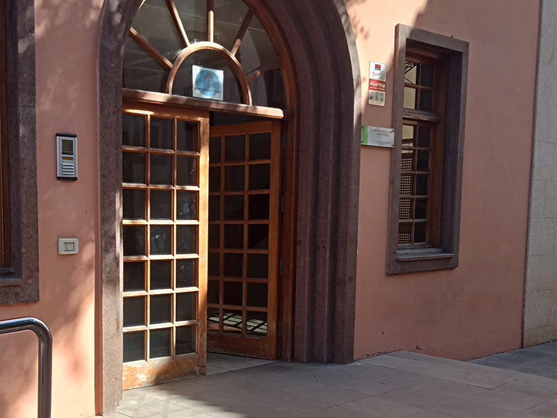

Elegimos la música para que te acompañe en este recorrido. ¿Cómo te gustaría ingresar?
Faltan

12 de septiembre de 2027 a las 20:00
Casa de la Cultura, Municipio de Güímar, Tenerife, España
A lo largo de estas páginas del libro Actitud: un viaje hacia la transformación personal encontrarás, un apasionante viaje hacia la transformación interna a través del poder de la actitud. Esta obra literaria, te invita a sumergirte en un recorrido profundo, donde descubrirás que el verdadero poder residirá en nuestras decisiones y reacciones ante los desafíos que nos presenta la vida. A lo largo de estas páginas te adentraras en historias inspiradoras, que te brindarán valiosas herramientas, estrategias y prácticas con una mentalidad de crecimiento. En cada capítulo encontrarás una guía clara y práctica, para desarrollar tu autoconocimiento, a nutrir tu bienestar físico y emocional.
Finalmente, descubrirás cómo mantener la plenitud personal, te animaré a consolidar tu elección con una actitud positiva, permitiendo que florezca y se arraigue en tu día a día.
Te invito a embarcarte en este fascinante viaje de autodescubrimiento y transformación. Sé testigo de tu propia evolución y permite que la actitud con una mentalidad de crecimiento, se convierta en una brújula que guía cada paso de tu camino hacia la plenitud personal. Que este libro sea un faro de inspiración y motivación en tu búsqueda de la transformación personal.
Había una vez una niña que desde temprana edad descubrió su amor por las palabras. En cada página en blanco, encontraba un mundo de posibilidades para expresar sus pensamientos y emociones de una manera única y conmovedora. Cautivaba a todos con su habilidad para transmitir sensibilidad y asombro a través de su escritura. A medida que crecía, su pasión por las palabras solo se fortalecía. Finalmente, su camino la llevo a una editorial, donde su deseo de escribir, encontró un nuevo propósito y una plataforma para brillar. Cada día, se sumergiría en historias y letras, inspirando a otros con sus palabras. Con el tiempo, está niña se convirtió en una autora comprometida, lista para plasmar en palabras su propio libro.
Así nació "Actitud: Un viaje hacia la transformación personal, una obra que refleja su amor por el crecimiento personal, y su deseo de compartir con el mundo. Té invitamos a unirte a nosotros en este viaje, a celebrar la pasión por la escritura, la transformación personal y la búsqueda constante de un mundo más brillante. Únete a nosotros para celebrar "Actitud" y el poder de las palabras para cambiar vidas.
Esperamos verte en este evento especial mientras compartimos historias, inspiraciones y el sabor de la transformación.
Con Gratitud Liseth.
"La escritura es una forma de autoexpresión, una valiosa ofrenda para la humanidad, compartir nuestro conocimiento y experiencias con el mundo."